Types of Cellular Automata
Cellular automata are mathematical models for discrete dynamical systems, of simple construction but complex and varied behaviour. A cellular automaton consists of a uniform lattice of sites, usually infinite in extent, with a finite set of possible values. In the simplest case, it consists of a line of sites, each in one of the states On or Off. Their values evolve synchronously, being determined by the variables of the sites in its "neighbourhood" on the previous time step and by a set of rules.
This section discusses the evolution of cellular automata from simple seeds, that consist of small regions of non-zero sites in a background of zeroes. Figure 1 shows example of patterns generated by the evolution from a single non-zero site. The evolution of the two-dimensional cellular automata follows a variety of rules:
| 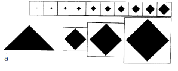 | ||
| 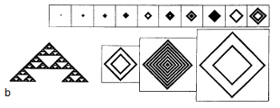 | ||
| 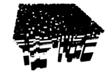 | ||
| 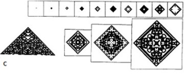 | Figure 1: Patterns generated by evolution of two-dimensional cellular automata from single-site seed. For each rule, there is generated a sequence of 10 frames which show the evolution in time. White squares represent sites with value 0 and black ones have value 1. |
|
| 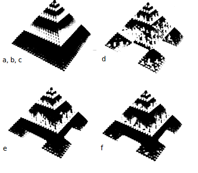 | Figure 2: Three-dimensional structures generated in the first 24 steps of the evolution of the two-dimensional cellular-automata. The first image have configurations with regular boundaries. The others yield dendritic patterns. |
The simplest cellular automata is one-dimensional. It has two possible values for each cell, 0 or 1, and the rules depend on its neighbourhood, that is the two cells near it, so there are 23 = 8 possible patterns for a neighbourhood. There have also been identified four qualitative classes of behaviour:
Certain properties of two-dimensional cellular automata are quite similar with those from one dimension. However, due to the geometry of the two-dimensional lattice there are a variety of phenomena involving interfaces and complicated boundaries.
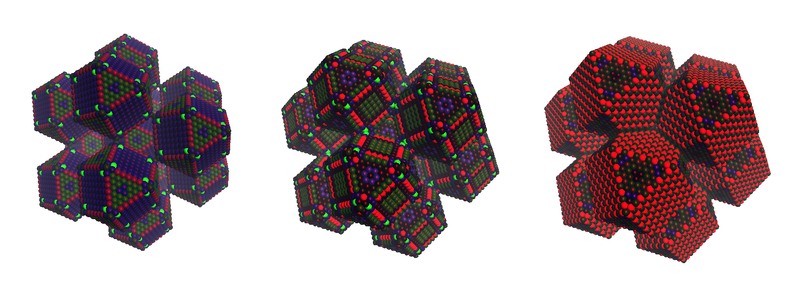A special class of cellular automata is the totalistic CAs. The state of each cell is represented by a number that depends on the sum of the values of the sites in the neighbourhood. Conway’s Game of Life is an example of a totalistic cellular automata.
Evolution from disordered initial states
The values of the site are randomly chosen to be 1 or 0. However, the presence of patterns in this case distinguishes the self-organization in the cellular automaton. Figure 3a is an example of cellular automata with behaviour which can be integrated in class-2. It is a collection of simple structures, each one being whether stable or oscillatory. The evolution rules of cellular automaton are like a “filter”, preserving only some features of the initial state.
However, in many of these cases the evolution of cellular automata is unstable, because small changes in the initial state can result in increasing changes in the patterns over a period of time. This is illustrated in the figure 4, that only differ by a single site in the initial state. Still, for class-2 cellular automata the change makes a difference only on a finite region and on a certain interval of time.
On the other hand, for class-3 cellular automata, the information tends to propagate forever, so the different patterns grow without bound.
Phases in the evolution of cellular automata have as parameters spatially periodic patterns. The size of the domain depends on the time before the domains become “frozen”. Any final state that is reached after a finite amount of time contains only finite size domains and therefore is not a pure phase. Two-dimensional cellular automata may contain “point” and “line” defects. Point defects are localized regions in the domains, whereas line defects correspond to the walls which separate the domains.
Figures 3b, c and d are examples of two-dimensional cellular automata with class-3 behaviour. At all times, there are chaotic aperiodic patterns and the differences resulting from single site changes in initial value expand at a fixed rate forever. An important feature is that in many cases, d here being the exception, the expansion occurs at the same speed in all directions, thus resulting in an asymptotically circular difference pattern. Even when the difference is not circular, they tend to have rounded corners. The explanation for this in based on the central limit theorem: Considering the set of sites corresponding to the neighbourhood for a cellular automaton, computing the probability that the value of the site changes after one step in the evolution when the value of the center site is changed, averaged over the number of possible arrangements of site values in the neighbourhood gives an approximation to the probability distribution of differences, obtained as a multiple convolution of this kernel. The number of convolutions performed is directly proportional with time and tend to a Gaussian form, independent of direction.
Some asymmetric class-3 cellular automata have different patterns that expand in the horizontal direction and contract in the vertical one, producing after a significant amount of time many independent horizontal lines, each behaving as one-dimensional cellular automaton of class-3.
A characteristic feature of class-4 cellular automata is the existence of some persistent structures that propagate through space and time. This class is much less common for two-dimensions than for one-dimension cellular automata.
| 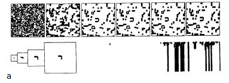 | 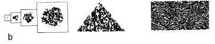 |
| 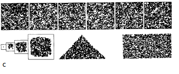 | 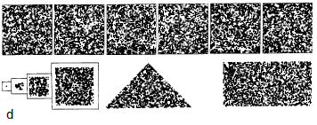 |
| Figure 3: Evolution of two-dimensional cellular-automata from disordered initial states. | |
|---|---|
| 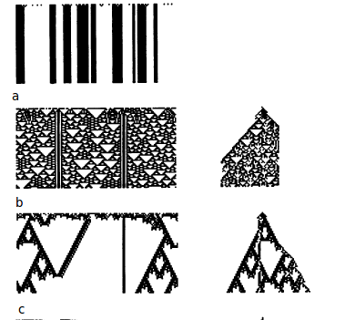 | 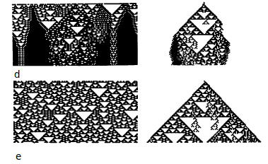 |
| Figure 4: Evolution of one-dimensional cellular-automata from disordered initial states. All non-zero sites are shown in black. |